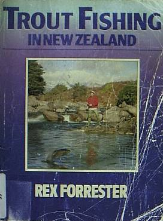

本棚から
Trout Fishing in New Zealand
Rex Forrester 著 Whitcoulls Publishers 刊
これもオークランドの図書館で見つけたニュージーランドの鱒釣りに関する名著です。

初版発行は1979年、その後、第二版が1987年に出ています。ざっと目次から内容を紹介しますと、
鱒釣りの概要
ニュージーランドに棲む鱒の種類
フライ・フィッシング
トローリング
スピニングとベイトキャスティング
ニュージーランドの釣り、その伝説と事実
ニュージーランドのフィッシングガイド
いつ、どこで、どう釣るか
北島の鱒釣りマップガイド
南島の鱒釣りマップガイド
鱒の料理と薫製
ニュージーランドの鱒釣り規則
アクラメーション・ソサエティ地域別一覧図（北島及び南島）
この本では特に、ニュージーランドの鱒と鮭の起源や1800年代後半からの鱒類の移入活動の歴史について詳しく書かれています。また、近年においてニュージーランドの鱒釣りがイギリスやアメリカの釣り人に広く認知されてきた経過がよくわかる貴重な写真が多く収められています。特に、60年代から70年代にかけてアメリカの著名な釣り人やマスコミ関係者、雑誌編集者などとの釣りの風景の写真が興味深いところです。また、フライばかりでなく、スピニングからトローリングまで広く技術論もカバーしています。ドライ、ウェイテッド・ニンフ、ストリーマーの写真はとても参考になります。
著者のレックス・フォレスター氏は15歳の時からハンティングと釣りに傾倒し、プロのディアー・ハンターとして活躍しました。その後彼は、政府機関においてシカ類の管理やスポーツフィッシングのフィールド管理官として尽力し、さらに、ニュージーランドの狩猟と釣りを海外に紹介して来ました。最近まで氏は政府のツーリスト／広報部局において、フィッシングとハンティングのアドバイザーとして勤務しています。フォレスター氏は他にも写真家、そして文筆家としても活動しています。
オークランドの古書店なら今でも入手しやすい本のひとつだと思いますので、チャンスのある方は探してみることをお勧めします。
本棚から 目次へ
サイトマップ
ホームへ
お問い合わせ